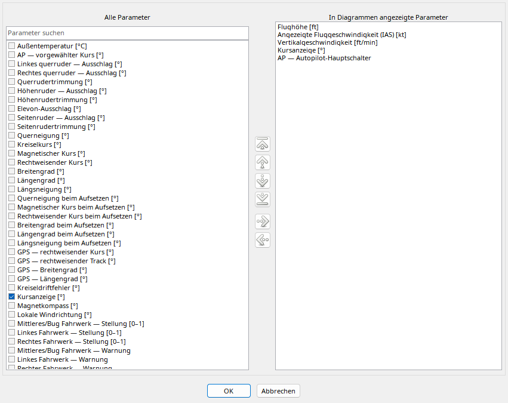

Links stehen verfügbare Parameter, rechts nur die sortierte Diagrammauswahl. Suche filtert links; leeren Sie sie für andere Gruppen. Tasten und Ziehen zwischen Listen zeigen/verbergen Werte.
Rechts ändern Auf/Ab und Anfang/Ende die Reihenfolge. Ctrl-Ziehen sortiert an die Ablageposition. OK übernimmt, Abbrechen verwirft. Das Bild enthält den vollständigen FDR-Standardkatalog statt fünf Beispielwerten; siehe SimVar-Katalog.
Verfügbare Parameter links, geordnete sichtbare Auswahl getrennt.
| Option / Aktion | Verhalten und Einschränkungen |
|---|---|
| Suche | Namensfragment suchen, leeren für alle Parameter; keine Löschung. |
| Anzeigen / Ausblenden | Diagramm in die Darstellung aufnehmen oder entfernen, ohne Aufnahmeänderung. |
| Drag-and-drop | Zwischen Listen zum Anzeigen/Ausblenden ziehen; nur akzeptierte Ziele wirken. |
| Reihenfolge | Auf/Ab/Anfang/Ende oder Strg-Ziehen in der sichtbaren Liste; zwischen Zeilen einfügen. |
| OK / Abbrechen | Auswahl übernehmen oder Dialogänderungen verwerfen. |
